Visão e documentos: o que o modelo realmente enxerga
Edição de quarta, 23 set 2026 · 8 vídeos · 2 h 43 min de talks
Oito talks sobre como a IA lê imagens, vídeos e PDFs. O fio comum: modelos grandes reconhecem bem, mas raciocinam mal sobre o que veem, e o ganho vem de preparar a entrada e treinar modelos menores com dados bem escolhidos. Comece pelo caso prático das fazendas e pelos PDFs, depois siga para o treino de modelos de visão e robótica.
01
You’re Not Thinking Big Enough: Rebuilding Food Systems with AI Agents
Decisões com muitas variáveis e sem resposta exata pedem um LLM que sugere e um humano que confirma; o pasto rotacionado é o exemplo.
Cody Menefee, do Firecrawl, defende que engenheiros deveriam mirar problemas físicos grandes, como automatizar o pastejo rotacionado de gado criado na grama.
A ideia é colocar um LLM (modelo de linguagem) no centro de um sistema que recebe posição GPS dos animais, seca, chuva e altura do capim, e sugere o próximo piquete para o fazendeiro confirmar.
Faltam três peças: uma base de conhecimento extraída da web, visão computacional para medir capim e um colar de GPS com API aberta; o talk termina com pedido de contratação para o Firecrawl.
Só 3% do gado é terminado no pasto, contra 97% em confinamento. O pasto bem manejado exige dividir a área em piquetes (paddocks) com comida para um dia e mover animais, cercas e água todo dia. Esse esforço diário explica por que quase ninguém faz.
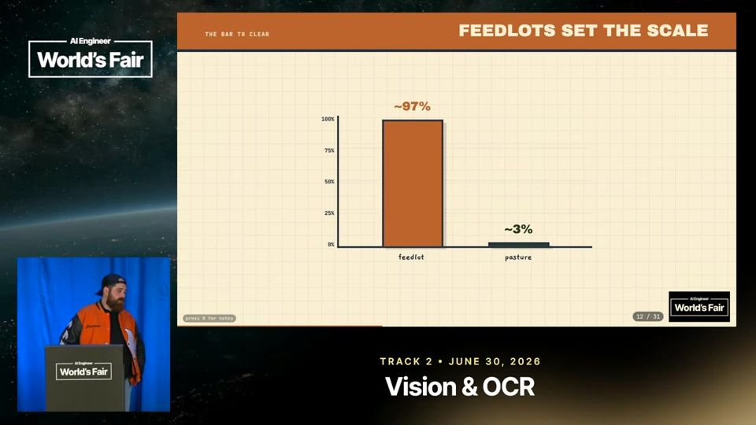
Mostra a proporção de gado em pasto e o motivo, o trabalho diário.05:00
Colar GPS resolve a cerca, mas ninguém decide para onde ir
Empresas como Halter e No Fence vendem colares que criam cercas virtuais e movem o rebanho sem esforço físico. Só que o capim cresce de forma diferente conforme seca, chuva e pisoteio. Hoje o fazendeiro caminha pelo pasto e decide a olho.
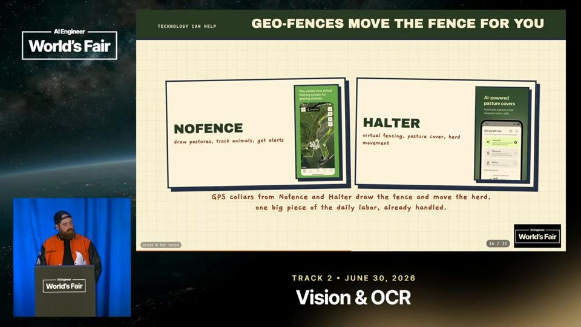
Ilustra a cerca virtual, que move o gado mas não escolhe o destino.06:44
Três formas de enxergar o capim sem o fazendeiro
Drones dão a melhor imagem, mas nenhuma jurisdição aprova voo autônomo. Satélites dão 1 metro de resolução por dia, mas ficam longe demais. A opção barata é uma câmera de trilha apontada para uma régua, que mede a altura do capim por comparação.
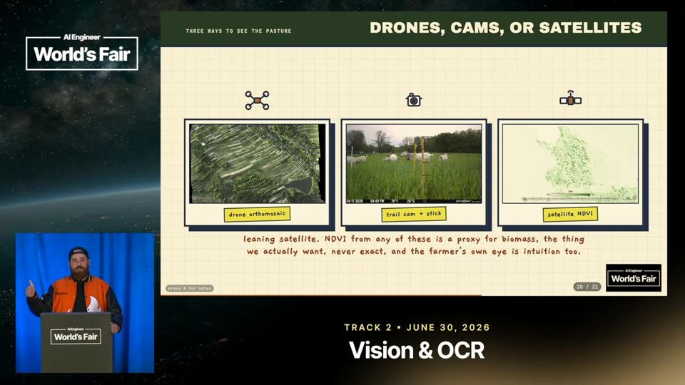
Compara as três opções de leitura do capim e seus obstáculos.08:48
Mais 2 ideias deste talk
LLM como recomendador com humano no comando
O modelo receberia posição atual e passada dos animais, condição de seca e altura do capim em toda a fazenda. Ele sugere o melhor próximo lugar para o rebanho, e o fazendeiro aceita ou recusa. Cody defende que problemas sem solução determinística são o terreno certo para LLMs.
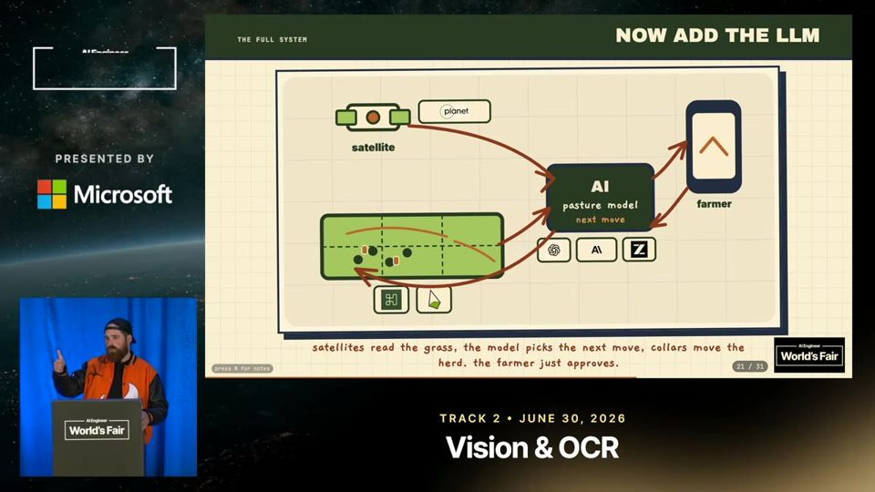
Lista os dados que alimentam a decisão do LLM sobre o piquete.10:25
Três bloqueios: conhecimento, visão e colar aberto
Primeiro, uma base de conhecimento montada com o Firecrawl a partir de vídeos de fazendeiros e artigos científicos, publicada no projeto Open Pasture. Segundo, visão que estime biomassa e biodiversidade. Terceiro, colares com API aberta, porque hoje o software só roda no hardware do fabricante.
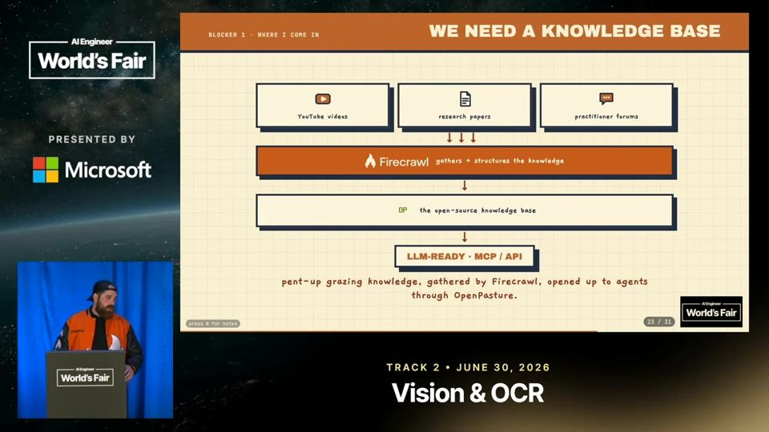
Resume o que falta para automatizar o pastejo.11:12
Ortomosaico de drone (drone orthomosaic map (mapa montado com fotos aéreas)). Um ortomosaico de drone é como montar um quebra-cabeça com várias fotos tiradas de cima de uma mesa, até formar uma única imagem da mesa inteira vista de cima.
Um drone voa sobre o pasto e tira centenas de fotos, uma ao lado da outra, com uma parte de cada foto repetida na seguinte.
Um programa acha os pontos repetidos entre as fotos e costura todas elas numa única imagem grande da área.
O programa também corrige a inclinação da câmera e o relevo do terreno, para que cada ponto apareça como se fosse visto bem de cima. Essa correção se chama ortorretificação (orthorectification).
O resultado funciona como um mapa (orthomosaic map, ou mapa ortomosaico) com escala uniforme, em que dá para medir distâncias e áreas com precisão.
No pasto, esse mapa de alta resolução mostra onde o capim está alto ou baixo. O obstáculo citado no talk é que o voo exige piloto treinado e nenhuma jurisdição aprova drones autônomos para esse uso.
O talk é em parte pitch de contratação do Firecrawl, e o palestrante faz parte da equipe de growth da empresa. Nenhum protótipo, teste em fazenda ou métrica de ganho aparece; o sistema com LLM é uma proposta. A afirmação de que mais animais em menos área competem com o confinamento fica sem dados. A crítica a Halter e No Fence também não considera os motivos técnicos ou de segurança para o hardware fechado.
O que fazer com isso
Liste no seu trabalho uma decisão com muitas variáveis e sem regra exata, e teste um LLM que apenas sugere enquanto uma pessoa confirma.
Antes de automatizar uma decisão, junte e organize os dados de entrada; Cody diz que dar contexto ao modelo é o problema número um.
Ao escolher fornecedor de hardware ou software, verifique se a API é aberta, para não ficar preso ao software do fabricante.
02
Building the Document Context Layer for AI Agents
Agente bom lê contexto ruim mal; o gargalo virou transformar PDFs em texto confiável, barato e rápido.
Jerry Liu, do LlamaIndex, diz que o RAG (geração aumentada por recuperação) de 2026 se divide em duas peças: um agente que raciocina sobre a busca e uma camada de contexto que entrega os documentos já legíveis.
Ele explica que PDF guarda letras com coordenadas e tabelas como linhas desenhadas, então ler documentos exige parsing especializado, e defende um híbrido entre pipelines clássicos e modelos de visão (VLMs).
A empresa apresenta o ParseBench, um benchmark público, e o LightParse, um parser gratuito em Rust para a primeira leitura rápida, com um parser mais caro chamado só quando a página pede.
No RAG de 2023 tudo era fixo: quebrar em pedaços, gerar embeddings, buscar os top K e responder. Hoje o agente escolhe o termo de busca, tenta de novo e refina. Por isso a ferramenta de recuperação pode ser simples, e o trabalho pesado fica no raciocínio do agente.
01:33 O fluxo fixo de 2023 que os agentes atuais substituíram por buscas iterativas.
PDF é desenhado, não escrito
Um PDF foi feito para imprimir. O texto vira glifos com coordenadas, a tabela vira segmentos de linha com caracteres em posições de célula, e a ordem de leitura de várias colunas não está guardada em lugar nenhum. Um agente que recebe o binário cru não consegue montar o sentido.
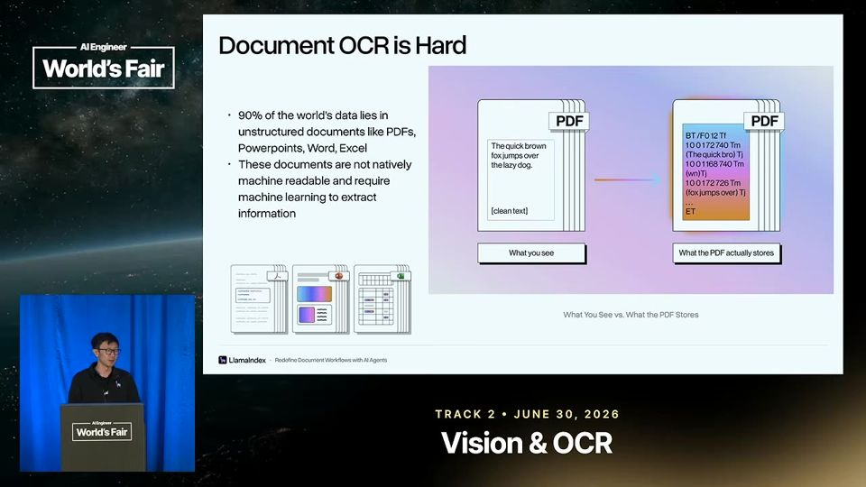
Mostra por que o arquivo bruto não serve como contexto para o agente.08:50
O híbrido busca a fronteira de Pareto
Pipelines heurísticos são baratos, mas rígidos. Ler a página inteira com um VLM funciona razoavelmente, porém custa caro e alucina em páginas só de texto. Liu propõe combinar os dois, com roteamento entre modelos baratos e de ponta, e diz que um fluxo ajustado ao tipo de dado sempre supera o modelo geral em custo e precisão.
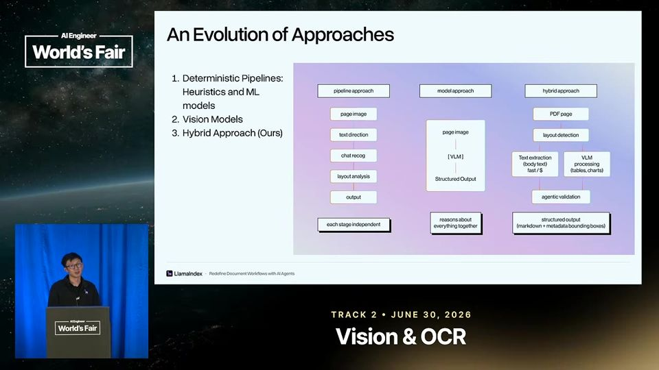
Posiciona a abordagem híbrida como a que equilibra custo e acerto.11:56
Mais 2 ideias deste talk
ParseBench mede o que o agente entende
O benchmark reúne 2.000 páginas verificadas por humanos e avalia tabelas, gráficos, fidelidade de conteúdo e formatação semântica. Ele compara cerca de 50 modelos em uma curva de custo contra precisão e mostra que entender documentos está longe de resolvido.
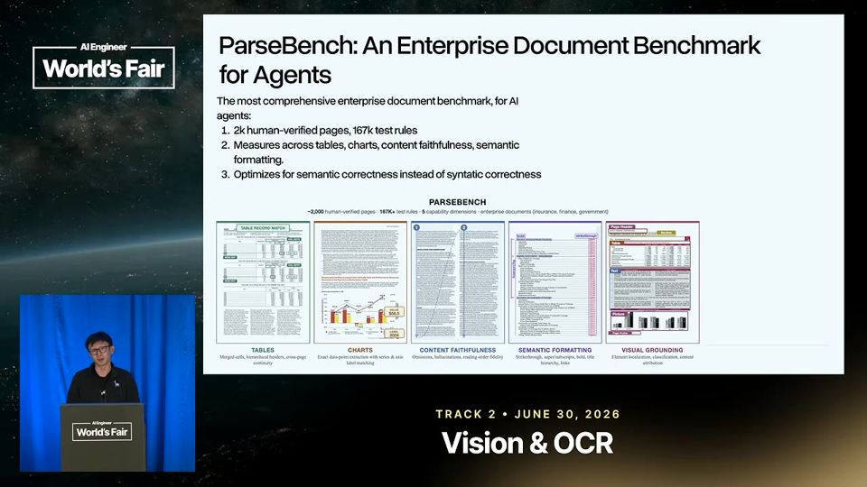
A curva mostra quanta precisão ainda falta a cada faixa de custo.14:01
Leitura rápida primeiro, VLM só quando precisa
Em uploads em tempo real, VLMs são lentos demais para mil PDFs em um minuto. O LightParse faz a passada inicial sem modelo, e o agente chama um parser com VLM apenas nas páginas com tabelas ou gráficos que exigem leitura dos valores.
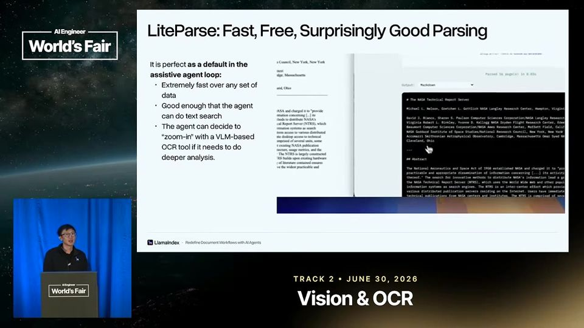
Desenha o fluxo em duas etapas que a empresa recomenda para agentes.17:43
O talk é pitch de produto do LlamaIndex, que vende o LlamaParse e o LightParse. O ParseBench é da própria empresa, que também aparece nele, e o palestrante não mostra números de ranking. Afirmações como fastest e most accurate open source parser não vêm com medição no vídeo. A parte de extração, busca e workflows foi pulada por falta de tempo.
O que fazer com isso
Teste seus PDFs mais difíceis (tabelas, várias colunas) em dois parsers diferentes antes de indexar, e compare o texto resultante com o original.
Separe seus documentos por regime, com alta precisão para casos regulados, baixo custo para indexação em massa e baixa latência para upload em tempo real, e escolha o parser por regime.
Ao montar um agente sobre documentos, dê a ele uma leitura rápida por padrão e uma ferramenta de leitura por visão para as páginas com tabelas e gráficos.
Peça citações até a página de origem em toda extração, para conferir valores antes de gravá-los em um sistema.
03
From Ingestion to Agents: How AI Teams Build on Document Intelligence
Agente só decide bem com entrada boa: parse estruturado, formato certo para cada consumidor e eval (avaliação) em cada etapa.
Adit Abraham, da Reducto, diz que PDF nasceu para imprimir e não para ser lido por modelo, e que um erro de leitura se acumula a cada passo de um agente.
Ele defende usar cada ferramenta onde ela rende: detectores pequenos para layout, modelo de visão para o texto difícil, correção em nível de token, formato diferente para o modelo e para a busca, e um agente com ferramentas para gráficos e extração pesada.
Na visão dele, o que sustenta tudo isso é medir cada etapa do pipeline e deixar o agente navegar por arquivos em vez de seguir um fluxo fixo.
Em RAG (busca de trechos para responder perguntas), um parse ruim custava uma resposta errada. Um agente toma várias decisões em cadeia sobre vários arquivos, então o erro da leitura inicial contamina tudo que vem depois. Por isso o palestrante trata o dado não estruturado como o gargalo real.
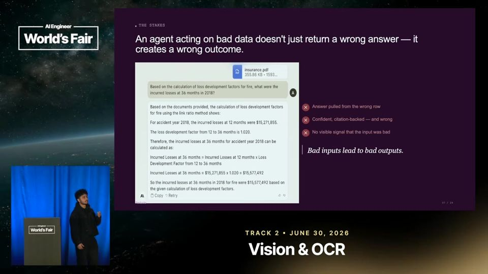
Mostra por que o erro de entrada pesa mais em agentes do que em RAG.04:12
OCR agêntico corrige token, não reescreve a página
Pedir a um modelo de visão que refaça o texto do OCR faz ele consertar o documento por conta própria. Um exemplo dado é somar uma coluna e trocar o total que o humano tinha errado. A Reducto aplica só correções pontuais, como zero no lugar de O, depois de um parse que combina visão computacional e modelo de visão.
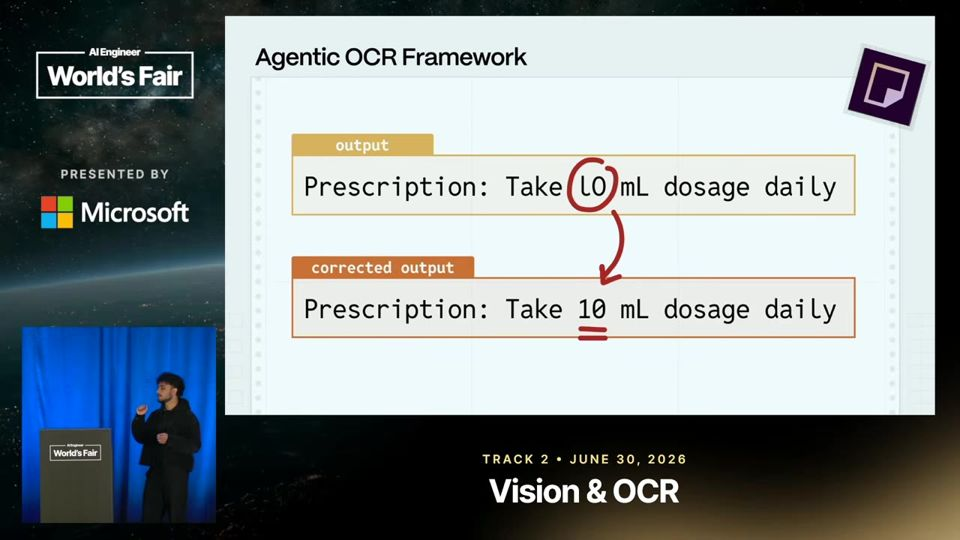
Mostra o passo de verificação que gera a saída de alta confiança.10:20
Uma tabela, três representações
Tabela simples vai bem em markdown. Tabela com células mescladas pede HTML, que o modelo lê bem mas custa mais tokens. Para a busca, o HTML atrapalha, porque o embedding (vetor que representa o sentido do texto) não casa uma pergunta como 'como a receita mudou' com um monte de tags. A solução é indexar uma descrição em linguagem natural e entregar o HTML ao modelo.
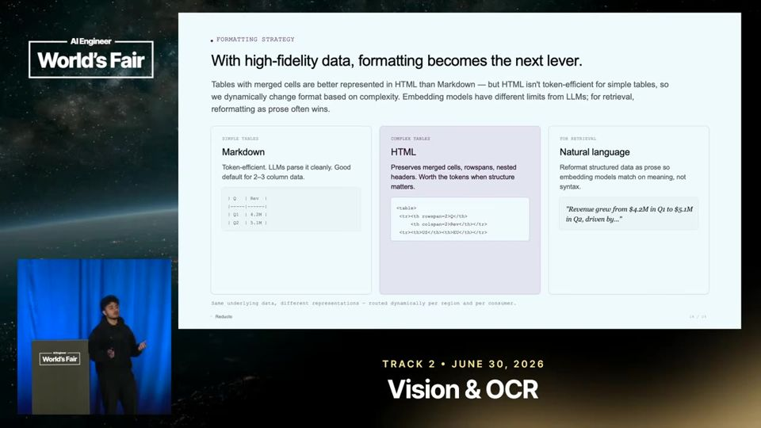
Compara a tabela em HTML com a versão escrita para o embedding.11:54
Mais 2 ideias deste talk
Entrada estruturada eleva modelos e gasta menos raciocínio
No benchmark GDP PDF, o modelo de fronteira mais novo fica perto de 30%. Ao dar aos outros modelos o PDF mais o resultado do parse, dois deles passaram esse modelo sem qualquer ajuste. Eles também usaram menos tokens de raciocínio, o que baixa a latência.
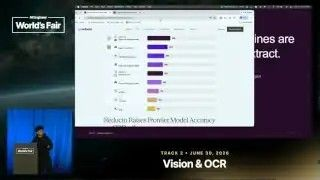
Mostra o ganho de acurácia vindo só da qualidade da entrada.13:31
Harness de agente resolve gráfico de linha e o dilema precisão versus recall
Nenhum modelo transforma um gráfico de linha em tabela numa tentativa só. Um agente com interpretador de código, que visualiza o próprio resultado e se corrige várias vezes, chega lá. O mesmo desenho reduz o vício dos modelos de fronteira, que acertam as linhas que extraem mas deixam linhas de fora sem avisar.
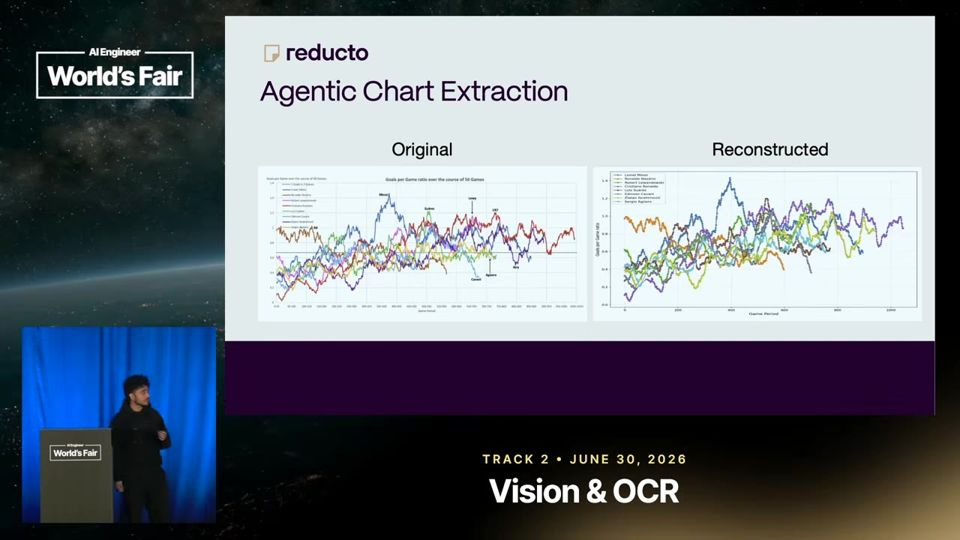
Mostra a tabela de dados recuperada a partir da imagem do gráfico.17:08
Agentic OCR (OCR agêntico com correção por token). Agentic OCR é como um revisor de prova que só troca a letra errada com caneta vermelha, sem reescrever a redação do aluno nem corrigir as contas dele.
Um programa lê a imagem de um documento e transforma em texto, mas às vezes confunde símbolos parecidos, como a letra O e o número zero.
Antes, uma equipe humana revisava esse texto e corrigia os erros. No Agentic OCR (OCR agêntico), um modelo de visão faz esse papel de revisor dentro do fluxo.
Primeiro, detectores pequenos marcam onde estão texto, tabela e letra de mão, e o VLM (modelo de linguagem com visão) lê as partes difíceis.
Depois, uma camada de verificação compara o texto com a imagem e aplica só correções pontuais por token (pedaço de texto), como ponto no lugar de vírgula.
Pedir ao modelo que reescreva tudo cria erros novos, porque ele tende a consertar o documento, por exemplo somando uma coluna e trocando um total que estava errado no original.
DETECÇÃO DE LAYOUTModelos pequenos acham texto e tabela
→
LEITURA COM VLMModelo de visão lê trechos difíceis
O palestrante é o fundador de uma empresa de processamento de documentos, então o talk tem viés de produto, embora ele diga que foca nas lições. Os ganhos no GDP PDF e o benchmark de precisão e recall são citados sem tabela, tamanho da amostra ou método, e um deles foi lançado por terceiros na manhã do talk. Ele reconhece que não testou o modelo mais novo porque perdeu o acesso. Falta comparar custo e latência do harness com uma chamada única.
O que fazer com isso
Se você alimenta um agente com PDFs, teste o mesmo documento com e sem parse estruturado e compare acurácia e tokens gastos.
Guarde tabelas complexas em HTML para o modelo e crie uma descrição em linguagem natural para indexar na busca.
Separe os documentos por tipo e divida pacotes longos antes de mandar tudo ao modelo.
Meça cada etapa (parse, busca, formatação, resposta) com um conjunto de testes seu, e monitore também os dados reais de produção.
04
The Best Models Still Reason Like Toddlers
Modelos de ponta reconhecem imagens bem, mas raciocinam mal sobre elas. Falta pensar no espaço visual.
Andrew Dai mostra que Claude, ChatGPT e Gemini erram perguntas visuais simples, como contar casas brancas de um tabuleiro parcial ou estradas de um jogador de Catan.
Ele diz que os benchmarks populares escondem o problema, porque usam imagens minúsculas ou perguntas que dá para responder sem olhar a figura.
A proposta da Elorian é treinar um modelo com dados visuais próprios e chain of thought (cadeia de raciocínio) feito dentro da imagem, com foco em robótica, construção e projeto mecânico.
Reconhecer padrão atrapalha quando a pergunta exige contar
Ao ver parte de um tabuleiro de xadrez, o modelo completa o resto de memória e responde 32 casas brancas. No Catan, ele vê dez estradas azuis fora do tabuleiro e conclui que há cinco no mapa, quando são sete. O mesmo talento que identifica flores acerta o padrão e erra a contagem.
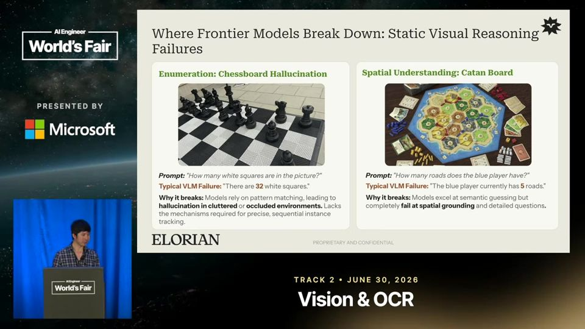
O modelo completa o tabuleiro de memória e erra a contagem.01:06
Teste de um segundo separa entender de raciocinar
Dai propõe uma regra prática. Se uma pessoa responde em um segundo, o modelo também responde, como no caso de qual jogo é aquele ou quantas peças há em um tabuleiro com três. Se a pessoa precisa olhar com calma, o modelo falha. Para quem monta sistemas, a dica é manter as tarefas visuais simples.
04:41 A fronteira entre entendimento visual e raciocínio visual.
Benchmarks visuais populares medem pouco
Dai critica o ARC-AGI, cujas imagens têm 32 por 32 ou 64 por 64 pixels, e o MMMU, em que muitas questões se resolvem sem olhar a figura. Ele pede novos testes de alinhamento geométrico, inteligência espacial e permanência de objetos.
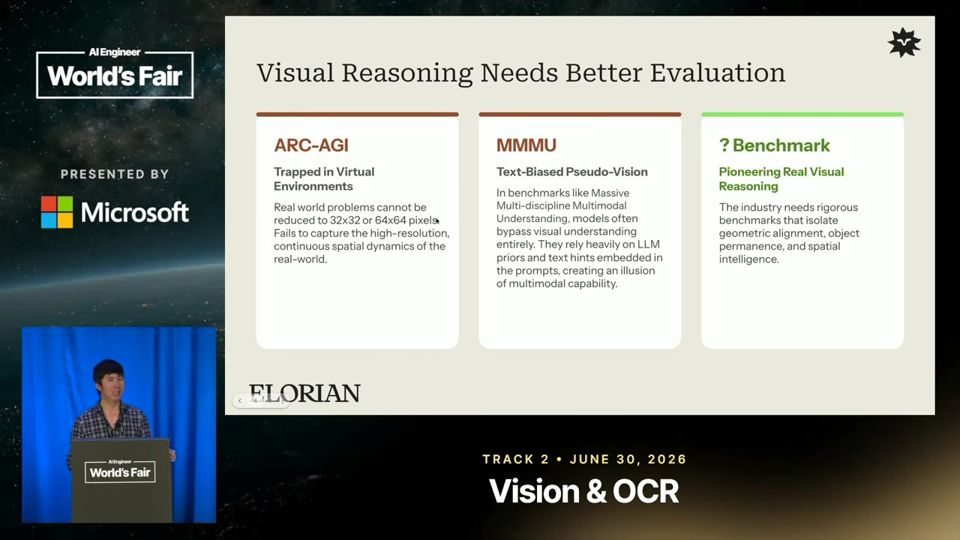
Imagens de 32 por 32 pixels não representam tarefas reais.06:15
Mais 2 ideias deste talk
Chain of thought visual desenha antes de responder
Os modelos atuais só pensam em texto. A Elorian quer que o modelo raciocine dentro da imagem. Na pergunta sobre hotéis vermelhos, ele desenha caixas em todos os hotéis e depois filtra os vermelhos. Dai diz que os humanos fazem isso e nenhum modelo de ponta faz.
10:25 Raciocínio em várias etapas feito no espaço visual.
Projeto mecânico se parece com programar
Uma empresa de engenharia mecânica disse a Dai que projetar uma peça de uma plataforma de testes leva 100 a 200 horas, e a plataforma inteira leva 2.000 a 3.000. Modelos de ponta falham em plantas e arquivos CAD. Como no código, um simulador pode validar o resultado, o que abre espaço para automação.
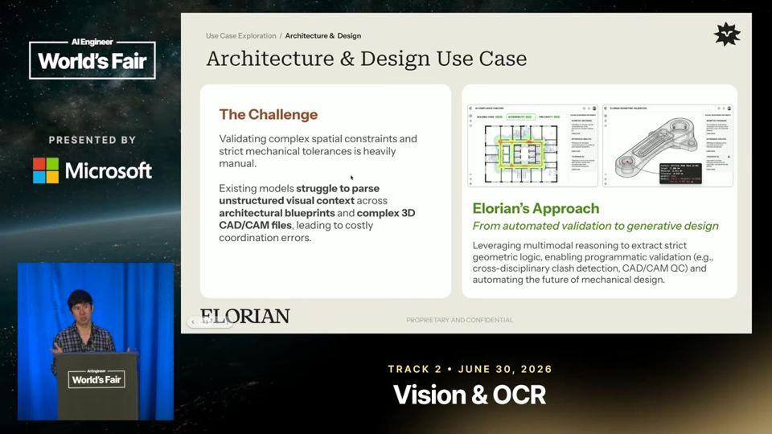
Horas de projeto e a analogia entre simulador e teste unitário.15:40
Visual chain of thought (cadeia de raciocínio visual). Cadeia de raciocínio visual é como contar os carros vermelhos de um estacionamento marcando cada carro com o dedo na foto antes de dar o número.
Quando uma pergunta sobre uma imagem é difícil, uma pessoa marca, circula e risca partes da figura até chegar à resposta.
Chain of thought (cadeia de raciocínio) é quando o modelo escreve etapas intermediárias antes de responder, em vez de responder direto.
Os modelos de ponta atuais fazem essas etapas só em texto. Eles olham a imagem uma vez e passam a pensar em palavras.
Na versão visual, cada etapa acontece dentro da própria imagem. Para achar hotéis vermelhos, o modelo desenha caixas em todos os hotéis e depois fica só com os vermelhos.
Segundo Dai, isso reduz o erro de completar a cena de memória, porque o modelo passa a conferir cada item marcado na figura.
PERGUNTA E IMAGEMQuantos hotéis vermelhos há na foto?
→
MARCAR CANDIDATOSDesenha caixas em todos os hotéis
Synthetic data flywheel (ciclo de dados sintéticos). O ciclo de dados sintéticos é como um professor que cria exercícios, corrige as provas e usa os erros da turma para montar a próxima lista de exercícios.
Para aprender, um modelo precisa de muitos exemplos. Dai diz que exemplos de raciocínio visual quase não existem na internet.
Dados sintéticos são exemplos gerados por computador, em vez de coletados do mundo real. Por exemplo, imagens com perguntas e respostas criadas por um programa.
Flywheel (volante de inércia) é um ciclo que ganha velocidade a cada volta. Aqui, o modelo treinado ajuda a gerar e filtrar os próximos dados.
Na Elorian, agents (agentes) produzem exemplos, evals (avaliações) apontam onde o modelo erra, e o treino com SFT e RL corrige esses pontos.
A cada volta, o modelo melhor gera dados melhores, e os dados melhores treinam um modelo ainda melhor.
GERAR DADOSAgentes criam exemplos visuais
→
AVALIAREvals mostram onde o modelo erra
→
TREINARSFT e RL corrigem os pontos fracos
→
MODELO MELHORVolta ao início e gera dados melhores
SFT e RL (ajuste fino supervisionado e aprendizado por reforço). SFT e RL são como aprender a cozinhar primeiro copiando receitas prontas e depois ajustando os pratos conforme a nota que os clientes dão.
Depois que um modelo aprende o básico, ele passa por treinos extras para ficar bom numa tarefa específica.
SFT, supervised fine-tuning (ajuste fino supervisionado), mostra ao modelo pares de pergunta e resposta certa. Ele aprende a imitar essas respostas.
RL, reinforcement learning (aprendizado por reforço), deixa o modelo tentar sozinho e dá uma nota para cada tentativa. As tentativas com nota alta ficam mais prováveis.
O SFT ensina o formato e o jeito de responder. O RL empurra o modelo a acertar mais, inclusive em casos que não estavam nos exemplos.
O RL funciona melhor quando existe um jeito automático de conferir a resposta, como contar itens numa imagem gerada ou rodar um simulador.
O talk também é pitch da Elorian, empresa do palestrante, e a API só sai no fim do ano. Não há resultado da Elorian, comparação com os modelos criticados nem amostra dos erros. Os exemplos de falha são casos escolhidos, sem taxa de acerto. Os relatos de robótica, construção e engenharia mecânica vêm de conversas com clientes, sem dados.
O que fazer com isso
Teste seu fluxo com uma pergunta visual que exija contar ou localizar itens e confira a resposta manualmente antes de confiar.
Mantenha tarefas visuais no seu sistema simples, do tipo que uma pessoa responde em um segundo, e não peça contagem detalhada.
Quando avaliar um modelo multimodal, crie evals (avaliações) próprios com imagens reais do seu trabalho em vez de confiar em ARC-AGI ou MMMU.
Onde houver simulador ou regra verificável, use a checagem programática para validar a resposta visual do modelo.
05
Skill issue: stop deploying vision language models, use them with Skills
Para visão computacional, use o VLM para rotular e julgar dados, treine um detector pequeno e ponha esse detector para rodar em produção.
Merve Noyan diz que modelos de visão e linguagem (VLMs) são lentos demais para tempo real e que um detector pequeno como o RF-DETR, treinado para a tarefa, rende mais.
Ela montou um kit para agentes de código que rotula imagens com um VLM, filtra os rótulos com dois VLMs juízes e treina o detector, a um custo de três a quatro dólares.
Os testes com placas de trânsito e leitura de documentos funcionaram, mas o agente ainda erra o senso comum da área, como espelhar placas, e um humano precisa aprovar os prompts dos juízes.
Merve afirma que quem usa VLM para tudo nunca chega a tempo real. Um detector treinado para a tarefa roda a 30 a 40 quadros por segundo em hardware simples e, segundo ela, supera o VLM. O VLM serve melhor como ferramenta de preparação, não de execução.
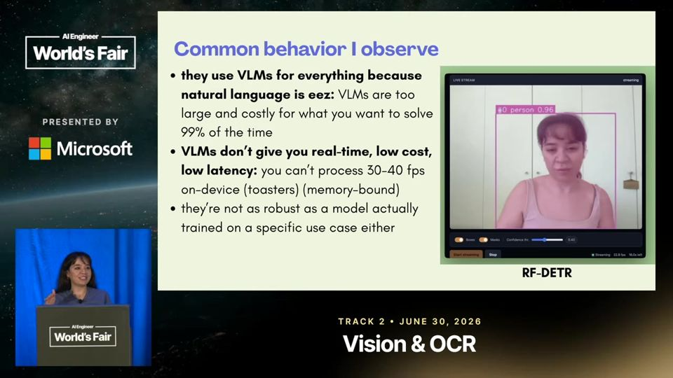
O detector pequeno roda em tempo real; o VLM não.01:16
Vibe training: VLM rotula, dois VLMs julgam, depois treina
O pipeline pega um conjunto de imagens sem rótulos e rotula com um VLM de 9 bilhões de parâmetros. Dois VLMs menores julgam cada rótulo. Só os exemplos aprovados vão para o treino do RF-DETR. O agente de código conduz as etapas longas, e o processo pode rodar local ou na infraestrutura da Hugging Face.
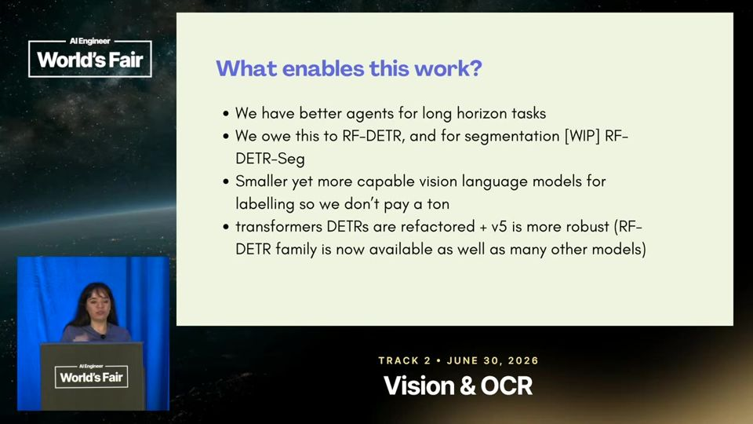
Todo o fluxo, do dado sem rótulo ao detector treinado.05:27
Caixas desenhadas na imagem em vez de tokens de coordenadas
O modelo rotulador devolve as caixas como tokens de texto. Merve não passa esses tokens aos juízes. Ela desenha as caixas sobre a imagem e pergunta, com a descrição do rótulo, se a caixa está correta. Os vereditos são unidos por acordo mínimo: basta um juiz aprovar para o exemplo entrar.
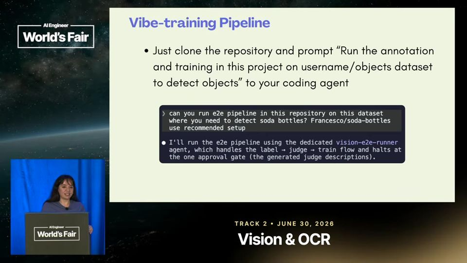
O juiz vê a caixa desenhada e responde aprova ou rejeita.06:59
Mais 2 ideias deste talk
Resultados em placas de trânsito e em documentos
Nas placas, ela comparou o detector treinado com os rótulos reais e obteve bom mAP acima de 50, com uma diferença esperada por ter aprendido com rótulos gerados. Em documentos, o detector achou uma assinatura que o modelo rotulador tinha deixado passar, sinal de que generalizou.
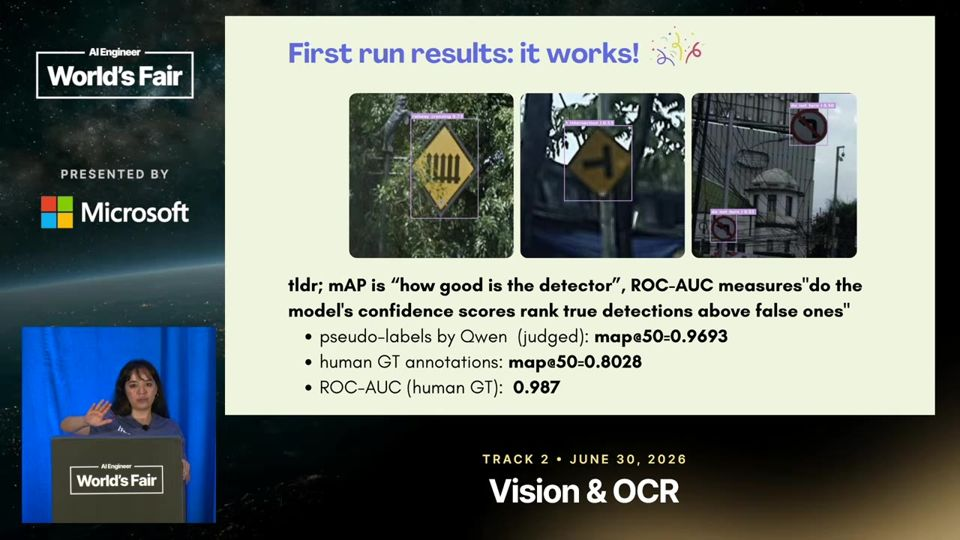
O detector achou a assinatura que o rotulador perdeu.10:37
Três achados sobre juízes, prompts e agentes
Um juiz rejeita muito mais que o outro, então exigir consenso deixaria poucos exemplos. Os prompts dos juízes ainda precisam de aprovação humana. E o agente de código, mesmo bom, espelhou placas na horizontal e mexeu na cor de semáforos, o que corrompe o conjunto de dados até ser instruído a não fazer isso.
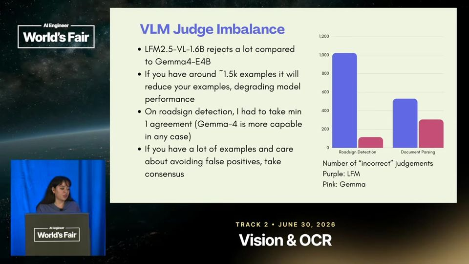
Onde o pipeline ainda depende de julgamento humano.12:13
Object detection (detecção de objetos). A detecção de objetos é como um fiscal de trânsito que olha a rua, aponta cada placa e cada carro e diz o nome de cada um.
A detecção de objetos (object detection) responde a duas perguntas sobre uma imagem. O que aparece nela e onde está.
Para cada objeto, o modelo desenha um retângulo em volta, chamado caixa delimitadora (bounding box), e dá um nome de classe, como placa ou assinatura.
Um detector pequeno, como o RF-DETR, aprende só as classes da sua tarefa a partir de imagens rotuladas.
Por ser pequeno e focado, ele roda de 30 a 40 quadros por segundo em hardware simples. Um VLM grande chamado a cada quadro não chega a esse tempo real.
LLM-as-a-judge (modelo que avalia a saída de outro modelo). Usar um modelo como juiz é como pedir a um colega de escritório que revise a planilha de outro antes de ela seguir para o chefe.
Um modelo de IA pode revisar o trabalho de outro modelo e dizer se está bom.
No LLM-as-a-judge (modelo como juiz), você entrega a saída de um modelo a outro, junto com critérios, e pede um veredito.
No talk, um VLM rotula imagens e dois VLMs menores julgam cada rótulo. Merve desenha a caixa sobre a imagem e pergunta ao juiz se ela corresponde à descrição do rótulo.
Ela pede aprova ou rejeita em vez de uma nota, porque notas numéricas funcionam mal, sobretudo com juízes de tamanhos diferentes.
Os prompts dos juízes são gerados pelo agente de código, mas um humano ainda precisa aprovar esses prompts antes de rodar.
Acordo mínimo versus consenso (aceitar se ao menos um juiz aprovar, ou só se todos aprovarem). Acordo mínimo é como uma banca de dois professores em que basta um deles aprovar o trabalho, e consenso é como exigir a assinatura dos dois.
Quando dois avaliadores olham o mesmo item, alguém precisa decidir o que fazer quando eles discordam.
No acordo mínimo (minimum agreement), o item entra se pelo menos um avaliador aprovar. No consenso (consensus), o item só entra se todos aprovarem.
No pipeline da Merve, dois VLMs juízes olham cada rótulo gerado. Um deles, o LFM, rejeita muito mais que o outro.
Com consenso, o juiz mais rígido derrubaria quase tudo e sobrariam poucos exemplos para treinar. Com poucos exemplos, o detector generaliza mal.
Por isso ela usou acordo mínimo, que guarda mais dados e aceita mais erro. Com um conjunto grande, o consenso passa a ser uma opção, porque ainda sobram exemplos depois do filtro.
mAP (precisão média em detecção, nota de qualidade do detector). O mAP é como a média geral do boletim de um aluno, que junta a nota de cada matéria e a nota de cada prova num número só.
O mAP (mean Average Precision, precisão média) é uma nota que diz quão bem um detector acha e localiza objetos numa imagem.
Para cada caixa prevista, o cálculo verifica se ela se sobrepõe o bastante à caixa verdadeira. Essa sobreposição se chama IoU (intersection over union, interseção sobre união).
Com isso o cálculo mede a precisão, quantas caixas previstas estavam certas, e o recall, quantos objetos reais o detector achou.
A precisão média resume essa troca entre precisão e recall para uma classe, como placa de pare. O mAP tira a média de todas as classes.
No talk, o detector treinado com rótulos gerados passou de 50 de mAP numa escala de 0 a 100, contra rótulos reais de um conjunto de teste.
CAIXAS PREVISTASSaída do detector no teste
→
COMPARA COM A VERDADESobreposição medida por IoU
→
PRECISÃO POR CLASSEResume acertos e objetos achados
Image-guided detection (detecção guiada por imagem de exemplo). A detecção guiada por imagem é como mostrar a foto de uma peça ao balconista da loja de ferragens e pedir todas as iguais, em vez de tentar descrever a peça com palavras.
Às vezes fica difícil descrever em palavras o objeto que você quer achar numa foto.
Na detecção guiada por imagem (image-guided detection), você entrega ao modelo uma imagem de exemplo do objeto em vez de uma descrição em texto.
O modelo compara esse exemplo com as outras imagens e marca com caixas os objetos parecidos.
Merve cita isso como plano futuro para a indústria, onde há peças e defeitos sem nome claro, e a linguagem natural não serve bem como porta de entrada.
O talk é a demonstração de um kit da própria palestrante, que trabalha na Hugging Face e roda o pipeline com créditos de computação da empresa, então o custo de três a quatro dólares vem de um cenário favorável. Só há dois testes, sem número exato de mAP no áudio, e o de documentos não tem rótulos reais para comparar. O rotulador acabou sendo a própria referência do teste em placas, e o modelo de juiz de menor porte tem licença própria com limite de receita.
O que fazer com isso
Antes de escolher um modelo de visão para produção, confira a licença. YOLO, por exemplo, usa AGPL, e alternativas com Apache 2.0 evitam surpresa jurídica.
Se precisa de visão em tempo real, teste um detector pequeno treinado para a sua tarefa em vez de chamar um VLM a cada quadro.
Ao usar um VLM para rotular dados, faça um juiz revisar os rótulos e revise você mesmo os prompts do juiz antes de treinar.
Se pedir a um agente de código para treinar um modelo de visão, diga explicitamente quais aumentos de dados são proibidos, como espelhar placas ou alterar cor de semáforos.
06
Modality Misalignment and Originality Attribution in Short-Form Video
Em vídeo curto em escala enorme, três agentes pequenos e especializados, com avaliação em cada nó, superam um modelo grande generalista.
O talk trata de dois problemas em vídeos curtos na Meta, o desalinhamento de modalidades dentro de um mesmo vídeo e o conteúdo não original, ambos em escala de mais de 100 milhões de vídeos.
A solução divide o trabalho entre três agentes (perceiver, reviewer e retriever), cada um movido por um VLM (modelo de visão e linguagem) pequeno, treinado com pré-treino, instruction tuning, DPO, destilação e quantização.
Para caber em produção, o time mede cada nó do pipeline, ajusta o orçamento de raciocínio e mantém a maioria dos vídeos fora do fluxo com compressão de quadros, cache e poda por metadados.
O reviewer orquestra, o perceiver quebra o vídeo em clipes e devolve embeddings, tags, OCR e descrição, e o retriever busca clipes e autores parecidos. O palestrante diz que só faz sentido usar vários agentes porque um único LLM não resolve o problema.
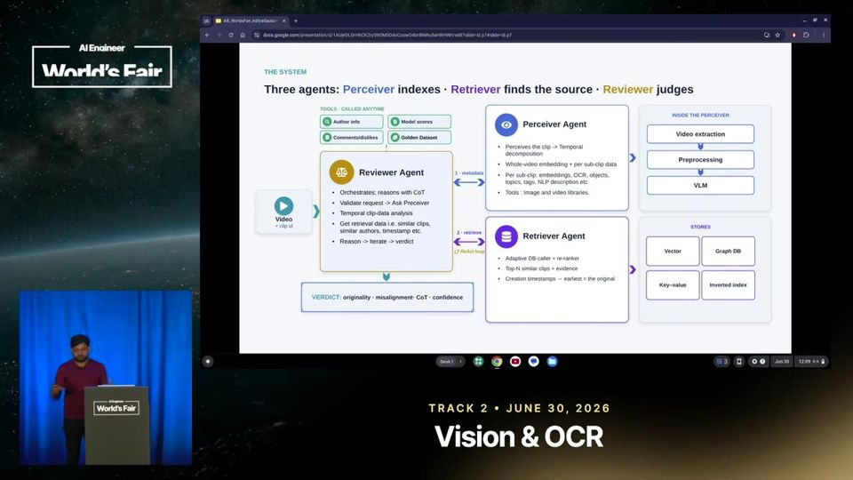
O fluxo entre os três agentes e o que cada um entrega.04:22
A análise temporal acha o trecho fora do tema
O reviewer lê o JSON do perceiver sem ver o vídeo. Ele percebe que o vídeo fala de esportes até os 6 segundos e vira política por meio segundo. Essa checagem dentro de uma única modalidade ao longo do tempo é o problema que embeddings de imagem e texto não resolvem sozinhos.
05:43 Como uma mudança de assunto curta aparece nos metadados.
Índice certo para cada tipo de sinal
O retriever guarda tópicos em índice invertido, embeddings em banco vetorial e entidades em banco de grafos. Assim, na hora da inferência, ele recupera clipes, autores e entidades similares, reordena os candidatos e usa um classificador de spam para filtrar.
Cada sinal extraído vai para o armazenamento que melhor o consulta.06:45
Mais 2 ideias deste talk
VLM pequeno treinado no dado sujo da casa
Modelos de fronteira aprendem com dados web limpos, mas vídeo de usuário é bagunçado. Por isso o time pré-treina o vision encoder com imagens internas e faz instruction tuning com saída em JSON e rótulos próprios. O palestrante diz que não se importa se o modelo sabe programar.
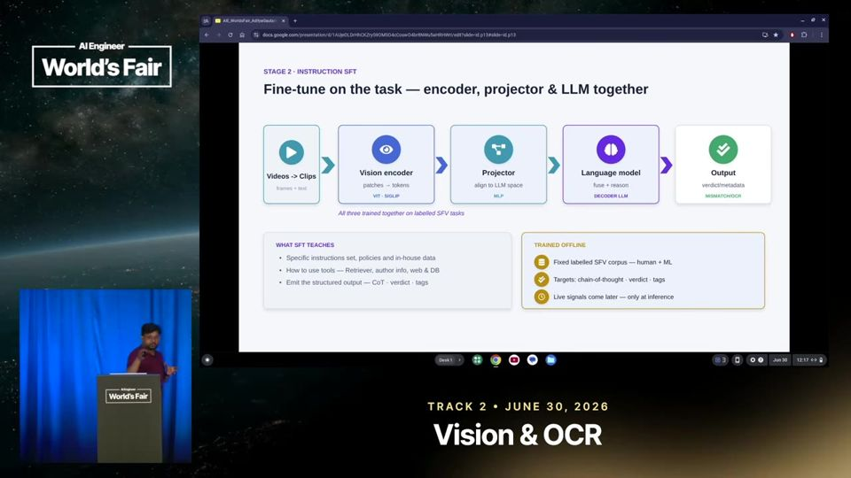
O projector liga o encoder de visão ao LLM, e é aí que entra o ajuste.12:26
Laço diário de DPO com humanos na fila
Todo dia uma amostra da produção passa por um LLM juiz treinado em rótulos humanos e por uma fila de revisão. Quando a métrica fica abaixo do limite, humanos rastreiam se a falha veio do raciocínio, de uma ferramenta errada ou da recuperação. Esses casos viram pares positivo e negativo para retreinar o modelo.
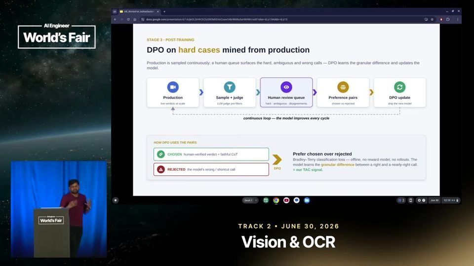
O ciclo contínuo que transforma falhas de produção em dado de treino.13:59
Multi-agent system (sistema multiagente). Um sistema multiagente é como uma redação de jornal, com um editor que coordena, um repórter que apura o fato e um arquivista que busca matérias parecidas no acervo.
Em vez de um único programa fazer tudo, o trabalho é dividido entre vários ajudantes, cada um com uma tarefa.
Cada ajudante é um agente, um modelo de IA com ferramentas próprias que decide o que fazer dentro do seu papel.
No talk, o reviewer (revisor) orquestra, o perceiver (percebedor) quebra o vídeo em clipes e descreve cada um, e o retriever (recuperador) busca clipes e autores parecidos.
O reviewer junta tudo, analisa e pode pedir mais dados ao retriever antes de decidir.
O palestrante defende dividir só quando um único modelo não resolve, porque cada agente a mais traz custo e mais pontos de falha.
Modality misalignment (desalinhamento de modalidades). Desalinhamento de modalidades é como um jogo de futebol na TV que de repente mostra meio segundo de propaganda política no meio do lance.
Um vídeo mistura vários tipos de informação, como imagem, áudio e texto na tela. Cada tipo é uma modalidade.
Modality misalignment (desalinhamento de modalidades) acontece quando uma parte do vídeo não combina com o resto ou com o que o vídeo promete.
Comparar imagem com texto já tem solução pronta, com modelos como o CLIP que medem a semelhança entre embeddings (vetores numéricos).
O caso difícil é achar um trecho curto fora do tema dentro do próprio vídeo, o que exige olhar clipe por clipe ao longo do tempo.
No exemplo do talk, o vídeo fala de esportes até os 6 segundos e vira política até 6,5 segundos. O reviewer acha isso lendo só os metadados de cada clipe.
DPO (otimização direta de preferências). DPO é como um treinador que mostra ao atleta dois lances lado a lado, um bom e um ruim, e pede para ele repetir mais o primeiro e menos o segundo.
O modelo já funciona, mas erra em alguns casos. A ideia é corrigir esses erros mostrando exemplos de acerto e de erro.
Para cada caso, o time monta um par com uma resposta boa (positiva) e uma resposta ruim (negativa) para a mesma pergunta.
DPO (Direct Preference Optimization, otimização direta de preferências) ajusta o modelo para aumentar a chance da resposta boa e diminuir a chance da ruim.
O ajuste é comparado com uma cópia congelada do modelo original. Isso evita que ele mude demais e esqueça o que já sabia.
No talk, os pares vêm de falhas de produção achadas por um LLM juiz e por revisores humanos, e o retreino acontece em ciclo contínuo.
Knowledge distillation (destilação de conhecimento). Destilação de conhecimento é como um chef experiente que ensina um cozinheiro novo a fazer só os pratos do cardápio da casa, sem passar por toda a gastronomia.
Existe um modelo grande que acerta bastante, mas custa caro para rodar em milhões de vídeos.
Knowledge distillation (destilação de conhecimento) treina um modelo menor, o aluno, para imitar as respostas do modelo grande, o professor.
O aluno aprende com as probabilidades que o professor dá a cada resposta. Esse sinal carrega mais informação do que um simples certo ou errado.
Na versão off-policy, o aluno imita respostas já geradas pelo professor. Na versão on-policy, o aluno gera as próprias respostas e o professor corrige.
O palestrante usa as duas versões porque só precisa do modelo bom no domínio dele, e aceita que o aluno não saiba programar, por exemplo.
MODELO PROFESSORGrande, preciso e caro
→
RESPOSTAS DO PROFESSORServem de gabarito detalhado
Quantization (quantização). Quantização é como arredondar os preços da lista de compras para o real mais próximo, o que deixa a conta mais rápida e quase não muda o total.
Um modelo de IA guarda bilhões de números. Cada número ocupa espaço na memória e tempo de cálculo.
Quantization (quantização) guarda esses números com menos precisão, usando menos bits por número.
Formatos comuns são bfloat16 (16 bits) e 4 bits. Menos bits significa modelo menor, mais rápido e mais barato de servir.
O arredondamento pode derrubar a qualidade, então o time testa cada formato e compara o desempenho.
No talk, o time monta uma tabela cruzando tamanhos de destilação e níveis de quantização para achar o ponto de equilíbrio entre acerto e custo.
O talk descreve a arquitetura sem mostrar resultados. Não aparecem métricas de precisão, recall, custo ou latência, nem comparação com um modelo grande único. O único número de desempenho é um limite de 95% dado como exemplo. A escolha por modelos pequenos é justificada por custo e escala, sem dados de apoio. A fala é de um funcionário da Meta sobre sistema interno, então não dá para reproduzir nem auditar.
O que fazer com isso
Ao desenhar um fluxo com IA, divida em etapas com papéis claros (perceber, decidir, recuperar) apenas se um único prompt não resolver o problema.
Meça cada etapa do pipeline, com latência, custo de tokens e taxa de erro por ferramenta, além da métrica final.
Coloque filtros baratos antes do modelo caro, como cache para conteúdo repetido e regras por metadados para fontes confiáveis.
Se usar um LLM como juiz, compare-o com amostras rotuladas por humanos com regularidade para detectar drift (deriva).
07
From Scratch to SOTA: Training a 3B State-Space Vision Model
Um modelo pequeno, treinado com curadoria de dados e recompensas verificáveis, supera modelos gigantes em OCR de línguas pouco digitalizadas.
A Sarvam treinou do zero um VLM (modelo de visão e linguagem) de 3 bilhões de parâmetros que roda em uma GPU e lidera OCR em 22 línguas indianas.
O modelo usa uma arquitetura de state space (espaço de estados) no lugar do transformer e lê a página por blocos, guiado por módulos externos de layout e ordem de leitura.
Segundo o palestrante, a vantagem competitiva está no motor de dados sintéticos e nos evals (avaliações) próprios, e o modelo já digitaliza 35 milhões de páginas.
Em 2025 a maioria dos modelos de OCR (reconhecimento de texto em imagem) lia a página inteira de uma vez. A Sarvam apostou em ler bloco por bloco, com dois módulos em volta do modelo. Um detecta o layout da página e outro define a ordem de leitura. O palestrante diz que vários lançamentos de 2026 adotaram o mesmo desenho de modelo pequeno com harness (estrutura de apoio).
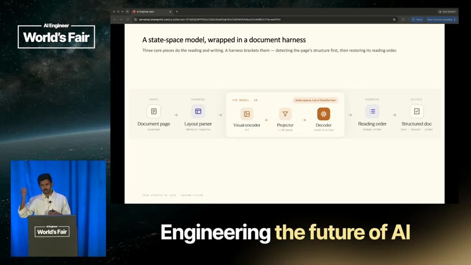
O modelo trabalha dentro de uma estrutura que recorta e ordena a página04:10
Por que trocar o transformer por um SSM
No transformer, cada token olha para todos os outros, e o custo cresce com o quadrado do tamanho da sequência. Um SSM guarda um único estado e o atualiza token a token, com custo linear e memória constante. Uma página pode gerar de 5 a 10 mil tokens visuais, então o SSM reduz o custo de inferência. O preço é uma memória com alguma perda, que a leitura por blocos ajuda a compensar.
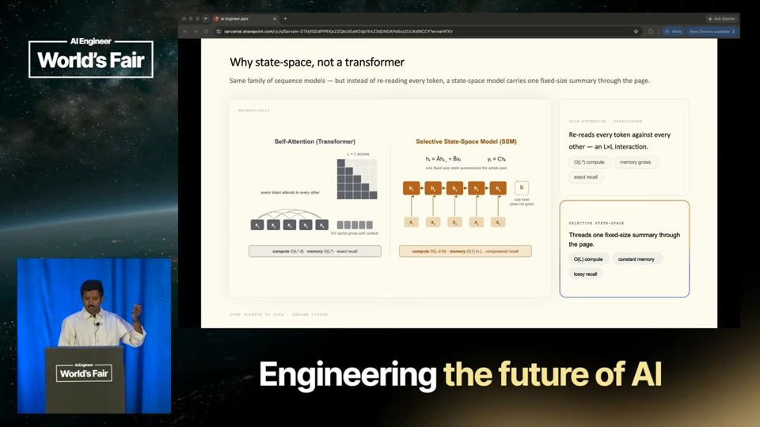
Custo quadrático do transformer contra custo linear do SSM05:00
Primeiro a língua, depois os pixels
O treino segue quatro etapas. Primeiro vem pré-treino só com texto, 13 trilhões de tokens em inglês, línguas indianas, matemática e código. Depois 300 milhões de pares imagem e texto, 100 milhões de exemplos de OCR em ajuste supervisionado e, por fim, aprendizado por reforço. A base de língua forte ajuda o modelo a adivinhar uma palavra borrada, como uma pessoa faz ao ler.
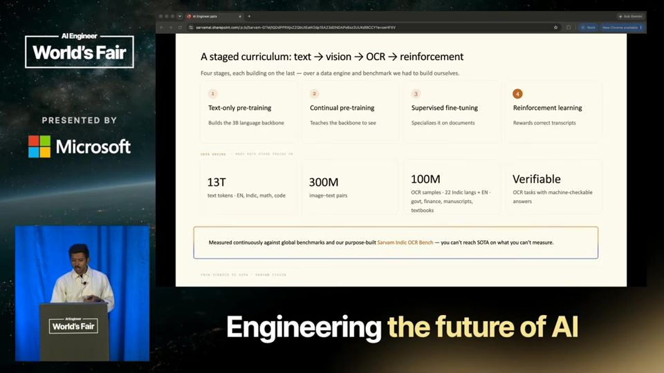
Sequência de treino do texto puro até o aprendizado por reforço06:10
Mais 2 ideias deste talk
Recompensas que o computador confere sozinho
Em OCR dá para checar a resposta de forma automática. A equipe cria testes como taxa de erro por caractere, estrutura de tabela ou regras de gramática. O modelo gera várias respostas, os testes dão nota, e o treino reforça as que ficam acima da média do grupo. Isso torna o RLVR (aprendizado por reforço com recompensas verificáveis) barato de escalar.
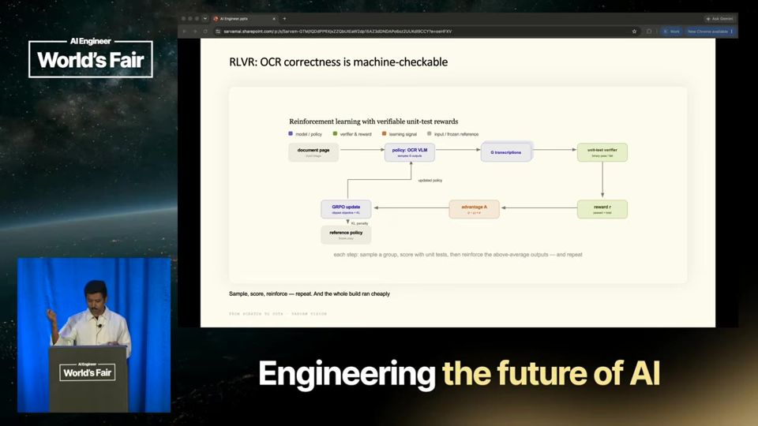
Loop de reforço com testes automáticos como recompensa09:43
Resultados em inglês e em línguas indianas
No lançamento, o modelo marcou 93,2 no OmniDocBench e 84,3 em outro benchmark global de OCR em inglês. O palestrante admite que modelos mais novos já avançaram nesses rankings. Em 22 línguas indianas, ele afirma que a Sarvam segue à frente de Gemini, ChatGPT e Claude Opus.
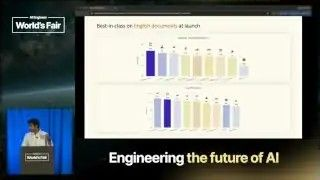
Comparação de desempenho em benchmarks de documentos10:16
State Space Model (SSM) (modelo de espaço de estados). Um SSM é como um aluno que lê um livro longo e anota só um resumo num caderninho, atualizando esse resumo a cada página em vez de reler tudo desde o começo.
Um modelo de linguagem lê o texto em pedaços pequenos chamados tokens (fichas), um depois do outro.
O SSM (State Space Model, modelo de espaço de estados) guarda um único estado, uma espécie de memória resumida do que já leu.
A cada novo token, o modelo mistura a informação nova com esse estado e produz um estado atualizado.
Como o tamanho do estado nunca muda, a memória fica constante e o custo cresce só em linha reta com o tamanho do texto.
O preço é uma memória com alguma perda de detalhe, e a Sarvam compensa isso lendo a página em blocos curtos.
Complexidade quadrática da atenção (custo que cresce com o quadrado do tamanho do texto). A complexidade quadrática é como uma festa em que cada convidado precisa cumprimentar todos os outros, e dobrar o número de convidados quadruplica o número de apertos de mão.
Quanto maior o texto que um modelo lê, mais trabalho ele tem para processar.
No transformer, o mecanismo de atenção (attention) faz cada token olhar para todos os outros tokens da sequência.
Com L tokens, isso gera L vezes L comparações, então o custo cresce com o quadrado do tamanho.
Uma página de documento pode virar de 5 a 10 mil tokens visuais, o que deixa a inferência (uso do modelo pronto) cara em processamento e memória.
Por isso a Sarvam trocou o transformer por um SSM, cujo custo cresce de forma linear.
VLM (modelo de visão e linguagem). Um VLM é como um secretário que olha a foto de um recibo e já digita o que está escrito nele, juntando olhos e leitura no mesmo trabalho.
Um VLM (vision language model, modelo de visão e linguagem) recebe uma imagem e responde em texto.
Uma parte do modelo transforma a imagem em tokens visuais, pedaços que representam regiões da figura.
Esses tokens visuais entram no modelo de linguagem junto com o texto, e ele gera a resposta palavra por palavra.
O VLM da Sarvam tem 3 bilhões de parâmetros, cabe em uma GPU e usa um SSM no lugar do transformer como modelo de linguagem.
Ele lê a página bloco por bloco, guiado por um módulo que detecta o layout e outro que define a ordem de leitura.
Currículo de treino (treino em etapas que se somam). Um currículo de treino é como a escola, onde a criança primeiro aprende a falar, depois a reconhecer letras, depois a ler textos e só no fim faz provas corrigidas.
Em vez de ensinar tudo de uma vez, o modelo aprende em etapas, e cada etapa se apoia na anterior.
Na etapa 1, o modelo lê só texto, 13 trilhões de tokens em inglês, línguas indianas, matemática e código, e ganha uma base forte de língua.
Na etapa 2, ele vê 300 milhões de pares de imagem e texto e aprende a interpretar pixels.
Na etapa 3, o ajuste supervisionado (supervised fine-tuning) usa 100 milhões de exemplos de OCR com tabelas, equações e escrita à mão.
Na etapa 4, o aprendizado por reforço (reinforcement learning) empurra o modelo além do limite que a etapa 3 alcança.
RLVR (aprendizado por reforço com recompensas verificáveis). O RLVR é como um treino de tabuada com gabarito, em que o aluno responde várias vezes, o professor confere cada resposta na hora e elogia as tentativas melhores que a média da turma.
No aprendizado por reforço (reinforcement learning), o modelo tenta, recebe uma nota e passa a repetir mais o que deu nota alta.
O RLVR (reinforcement learning with verifiable rewards, aprendizado por reforço com recompensas verificáveis) usa notas que um programa calcula sozinho, sem um humano julgar.
Em OCR isso funciona bem, porque dá para medir a taxa de erro por caractere, conferir a estrutura de uma tabela ou checar regras de gramática.
O modelo gera um grupo de respostas para a mesma imagem, os testes dão nota a cada uma e o treino reforça as que ficam acima da média do grupo.
Como a nota sai de testes automáticos, o processo fica barato de repetir em escala.
GERA UM GRUPOVárias respostas para a mesma imagem
→
TESTES DÃO NOTAErro por caractere, tabela, gramática
→
COMPARA COM A MÉDIASepara as respostas acima da média
O talk é apresentação comercial da Sarvam, feita pelo próprio gerente geral. A liderança em línguas indianas vem de avaliações internas, e o benchmark público ainda não saiu. Não há números de comparação com Gemini ou ChatGPT, só a afirmação. Os 35 milhões de páginas e o preço competitivo aparecem sem clientes nomeados nem custo por página. O ganho do SSM sobre o transformer é argumentado em teoria, sem medição de custo mostrada.
O que fazer com isso
Ao escolher uma ferramenta de OCR para documentos em português ou línguas regionais, teste com uma amostra dos seus próprios documentos antes de confiar em rankings.
Para extrair dados de documentos longos, divida a página em blocos e defina a ordem de leitura antes de mandar para o modelo.
Quando a resposta puder ser checada por regra, como total de uma tabela ou formato de CPF, crie verificações automáticas para medir a qualidade da extração.
Se o documento contém dados sensíveis, pergunte ao fornecedor onde o modelo roda e se existe opção local.
08
From VLM/VLA's to Embodied Agents
Um só modelo que percebe, raciocina e controla o robô aprende melhor, e vídeo barato passa a substituir parte da teleoperação cara.
A Perceptron defende juntar VLM, VLA e world model em um único embodied foundation model (modelo de base incorporado), que vê, raciocina e age.
Os dois gargalos são o sinal de treino escasso em vídeo longo e o excesso de tokens de câmeras sempre ligadas, atacado com um roteador que escolhe quais tokens ler.
O palestrante afirma ter achado uma scaling law (lei de escala) em que 10 vezes mais vídeo de pré-treino compensa 10 vezes menos dados de teleoperação.
Uma hora de vídeo vira cerca de 1 milhão de tokens visuais, mas a loss (função de erro) cai só sobre uns 2% deles, porque a referência é a transcrição ou poucos quadros rotulados. Prever cada pixel também falha, pois dá o mesmo peso ao fundo e à ponta da garra. A Perceptron diz usar um objetivo perceptivo que aprende sozinho quais percepções importam, sem revelar como.
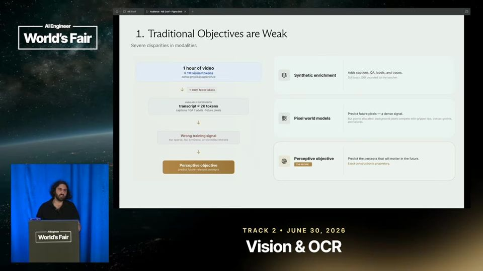
Só cerca de 2% dos tokens de um vídeo de uma hora geram sinal de aprendizado.04:08
O modelo escolhe quais tokens ler
Câmeras que nunca desligam enchem o contexto. Fazer média de patches comprime até 10 vezes, mas o palestrante chama isso de gambiarra. A saída publicada foi o data sparse mixture of experts, em que um roteador decide, camada a camada, que tokens processar e quais pular. Sem regra fixa, o modelo passa a olhar o gráfico dentro de uma figura e gasta mais tokens nas frutas quando a tarefa é segmentar frutas.
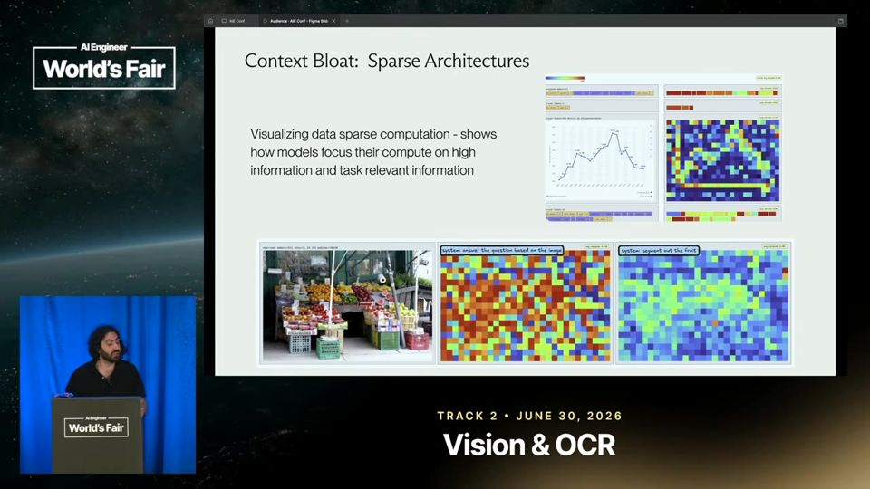
O roteador concentra tokens no que é relevante para a tarefa pedida.07:47
Detecção de objeto vira tarefa de agente
Treinado com 1 petabyte de texto, imagem, vídeo e trajetórias de uso de desktop e de videogame, o modelo passou a tratar visão computacional clássica como tarefa agêntica. Para achar um pássaro escondido, ele divide a imagem em blocos, aumenta o contraste, escreve código e propõe caixas até acertar.
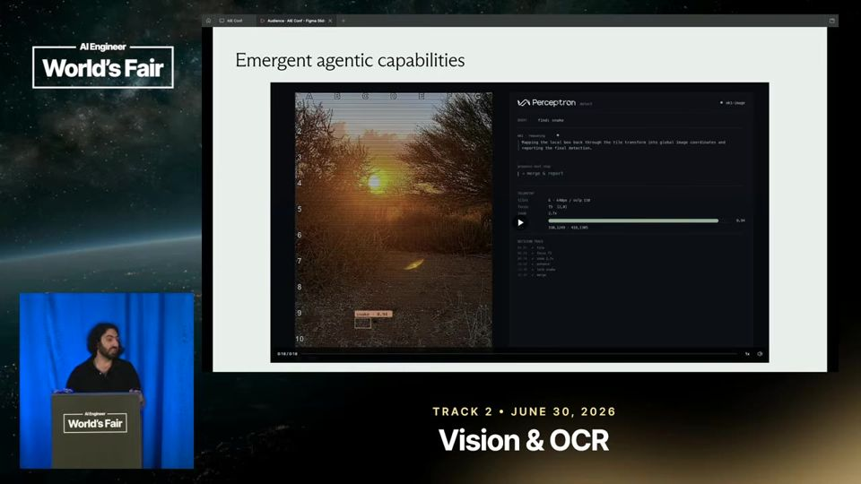
O modelo usa ferramentas em várias etapas para detectar um objeto difícil.10:21
Mais 2 ideias deste talk
Vídeo barato no lugar de teleoperação cara
Teleop (dados de robô guiado por humano) custa na ordem de US$ 100 por hora. Treinando percepção, raciocínio e controle juntos, a empresa diz que 10 vezes mais vídeo de pré-treino substitui 10 vezes menos teleop, dentro do cômputo que ela tem. Políticas puras (VLA) também escalam, mas ganham menos.
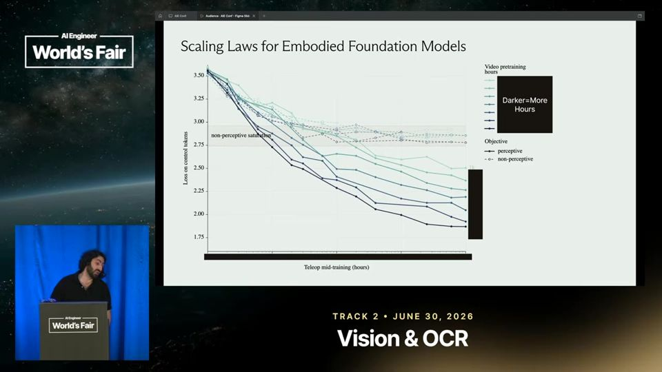
Modelos unificados trocam horas de teleoperação por vídeo de pré-treino.13:58
Um modelo que lê o livro e o guarda
A demo final mostra um único modelo emitindo tokens de controle para separar livros. Ele precisa ler o título, saber o gênero e pôr o livro na caixa certa. O movimento ainda treme, e a promessa é abrir os pesos de um modelo menor em julho.
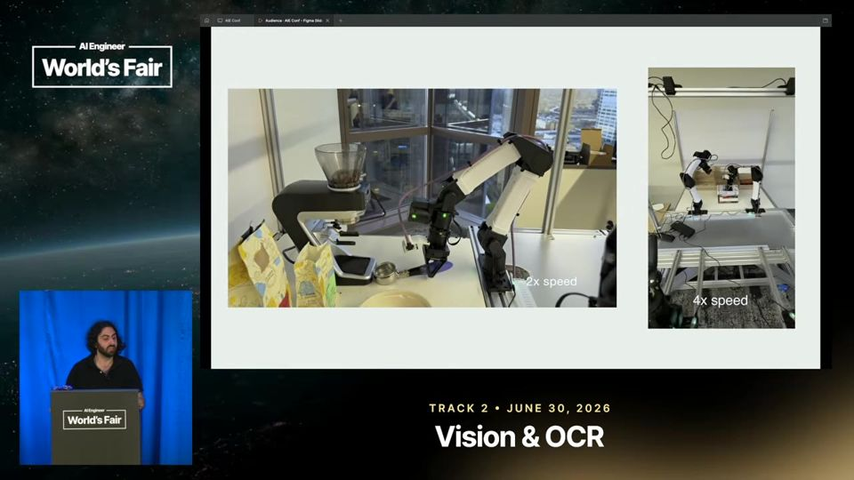
Percepção e controle na mesma rede resolvem uma tarefa de várias etapas.15:00
VLA (modelo de visão, linguagem e ação). Um VLA é como um garçom que ouve o pedido, olha a mesa e já estende a mão para pegar o prato certo, sem precisar que alguém traduza o pedido em movimentos.
Um VLM (modelo de visão e linguagem) recebe imagem e texto e responde em texto, como um chat que enxerga fotos.
Um VLA (vision-language-action, modelo de visão, linguagem e ação) usa a mesma base, mas responde também com ações.
Essas ações são comandos para um robô, como posição do braço ou abrir e fechar a garra, escritos como tokens de controle.
Para aprender, o VLA costuma usar dados de teleop (robô guiado por um humano), que custam caro, na ordem de US$ 100 por hora.
O palestrante diz que um VLA puro também melhora com mais dados, mas ganha menos do que um modelo que treina percepção, raciocínio e controle juntos.
World model (modelo de mundo que prevê vídeo futuro). Um world model é como o motorista que, antes de frear, já imagina onde o carro da frente vai estar daqui a dois segundos.
Um world model (modelo de mundo) é um programa que tenta prever o que vai acontecer em seguida numa cena.
Ele recebe imagens ou vídeo do momento atual e, às vezes, a ação que alguém vai fazer, como mover um braço robótico.
Com isso, ele gera os próximos quadros do vídeo, mostrando como a cena deve mudar depois daquela ação.
Para acertar a previsão, o modelo precisa aprender regras físicas, como gravidade, contato e objetos que ficam escondidos atrás de outros.
A variante chamada semantic world model (modelo de mundo semântico) pula o vídeo e guarda só uma representação interna útil para prever o futuro.
Early fusion (fusão precoce de modalidades). Early fusion é como uma cozinheira que mistura todos os ingredientes na mesma panela desde o início, em vez de cozinhar cada um separado e juntar só no prato.
Um modelo multimodal trabalha com vários tipos de dado ao mesmo tempo, como texto, imagem, vídeo e som.
Na late fusion (fusão tardia), cada tipo passa por um sistema próprio, e os resultados só se encontram no final.
Na early fusion (fusão precoce), todos os tipos viram tokens logo na entrada e seguem juntos pela mesma rede.
Assim, o modelo aprende relações entre palavras e pixels desde as primeiras camadas, e também pode responder em mais de um formato.
O ponto difícil é escolher como representar cada tipo de dado, porque vídeo gera muito mais tokens do que texto para a mesma informação.
Embodied reasoning (raciocínio espacial e físico). Embodied reasoning é como o chefe de cozinha que olha a bancada, entende onde está cada coisa e divide o preparo do café em etapas para o ajudante executar.
Embodied reasoning (raciocínio incorporado) é a capacidade de pensar sobre o mundo físico, como posição, distância e ordem das tarefas.
Um modelo com esse raciocínio responde perguntas como o que está à esquerda de quê, ou marca pontos exatos numa imagem.
Em robótica, um modelo de embodied reasoning pode agir como orquestrador, quebrando uma tarefa longa em subtarefas menores.
Cada subtarefa vai para uma política de controle, o modelo que de fato move o robô, e existe um espectro entre separar esses papéis ou juntá-los num só modelo.
O palestrante diz que dados da internet raramente descrevem esquerda, direita ou abaixo, e que por isso é preciso planejar esses dados desde o pré-treino.
Mixture of experts (mistura de especialistas com roteador). Mixture of experts é como a recepção de um hospital que olha cada paciente e manda só para o especialista certo, deixando os outros médicos livres.
Um modelo de IA grande gasta muito cálculo se toda parte dele processar toda informação que chega.
Na mixture of experts (mistura de especialistas), o modelo tem vários blocos menores, chamados experts, e cada um se especializa em um tipo de padrão.
Um router (roteador) olha cada token e decide quais experts vão trabalhar nele, e os outros ficam parados.
A versão da Perceptron, chamada data sparse mixture of experts, usa o roteador para decidir em cada camada que tokens processar e quais pular.
Sem regra fixa, o modelo aprende sozinho a gastar mais cálculo no que importa para a tarefa, como as frutas de uma foto quando o pedido é achar frutas.
TOKENS DE ENTRADAPedaços de imagem, vídeo e texto
→
ROTEADORDecide o destino de cada token
→
PROCESSA OU PULAToken relevante segue, o resto sai
O CEO apresenta o próprio produto. As comparações com o Gemini (melhor e 15 vezes mais barato) aparecem sem benchmark mostrado na fala. O objetivo perceptivo é chamado de propriedade intelectual e não é explicado. A nova scaling law vale só no cômputo da empresa e ficou para ser detalhada no Twitter. O próprio palestrante admite que a compreensão temporal ainda falha e que o robô treme.
O que fazer com isso
Ao usar um modelo de visão, peça que ele recorte ou amplie a região de interesse antes de responder, imitando a detecção em etapas.
Antes de mandar vídeo longo a um modelo, corte trechos parados ou envie só quadros-chave para economizar contexto.
Compare custo por tarefa entre modelos de visão em anotação de vídeo, pois a diferença de preço citada chega a uma ordem de grandeza.
Trate números de palestra de fornecedor como hipótese e teste em uma amostra dos seus próprios dados.